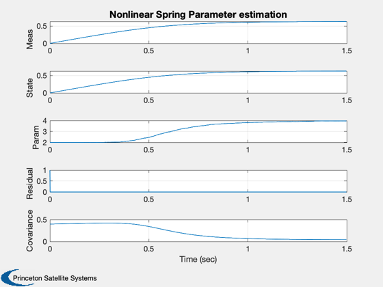

Demonstrate UKF parameter estimation with a nonlinear spring example.
------------------------------------------------------------------------
See also Plot2D, RK4, UKFP
------------------------------------------------------------------------
Contents
nSim = 1500;
dRHS.u = 1;
dRHS.w = 4;
sigY = 0.0001;
xP = zeros(5,nSim);
x = 0;
dT = 0.001;
Estimation parameters
d = struct;
d.x = 0;
d.p = 0.4;
d.int = @RK4;
d.rHSFun = @RHSUKF;
d.measFun = @GXUKF;
d.measFunData = [];
d.alpha = 1;
d.kappa = 2;
d.beta = 2;
d.dY = 1;
d.dT = dT;
d.rHSFunData = dRHS;
d.rP = 0.0001*dRHS.u;
d.rY = 0.000001*dRHS.u;
t = 0;
y = 0;
d.w = dRHS.w/2;
d = UKFP('initialize', d );
for k = 1:nSim
d.x = x;
xP(:,k) = [y; x; d.w; d.dY; d.p];
x = RK4( @RHSUKF, x, dT, 0, dRHS );
y = x + sigY*randn;
t = t + dT;
d.t = t;
d = UKFP( 'update', d, y );
end
t = (0:(nSim-1))*dT;
xL = {'Meas' 'State' 'Param' 'Residual' 'Covariance'};
Plot2D( t, xP, 'Time (sec)', xL, 'Nonlinear Spring Parameter estimation' );
